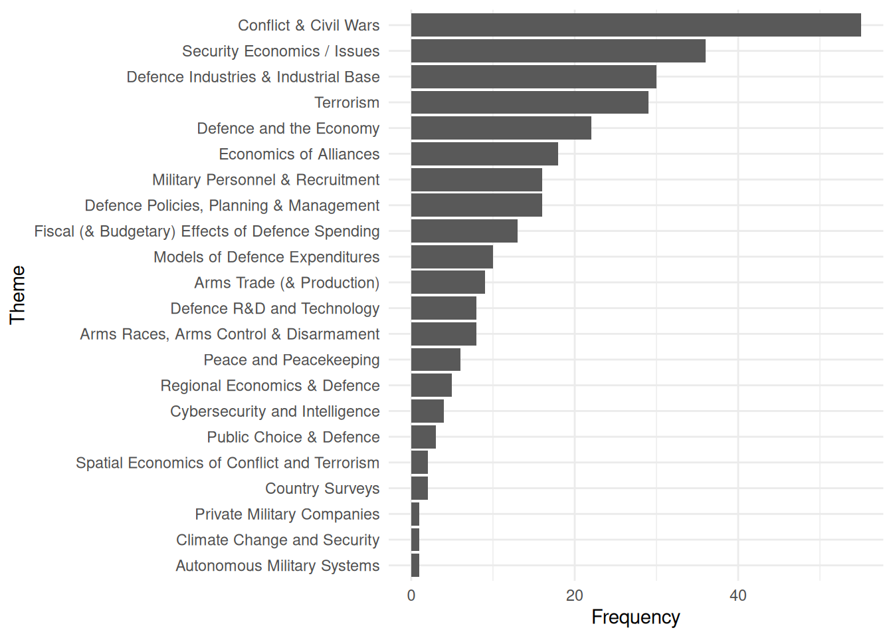
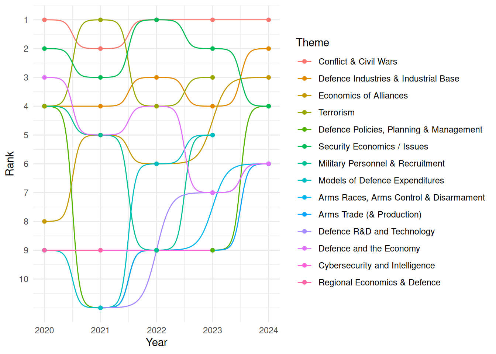

Defence Industrial Base Literature Review
Introduction
Defence industries play a pivotal role at the intersection of national security, technological advancement and public policy. They not only underpin sovereign military capabilities, but also drive innovation, shape global markets and influence broader economic performance. This sector’s unique features—including high entry barriers, substantial R&D intensity, strong government involvement and complex procurement practices—make it an ideal subject for integrated analysis across innovation, regulation, finance and strategic autonomy.
Scope of the review
This article synthesises recent literature from the Journal of Defence and Peace Economics (2020-2024) across six themes: Innovation, R&D and technology transfer; Government policy and regulation; Industry performance and productivity; Comparative case studies; Competition, consolidation and market structure; and Procurement and cost dynamics. By reviewing country‑level and cross‑regional empirical work—ranging from China, the US and Europe to Spain, Malaysia and Brazil this review captures the sector’s heterogeneity and evolving global interdependencies.
Key analytical threads
Despite differing national contexts and methodologies, the literature converges around several central insights:
Innovation and R&D are critical for performance, yet returns are non‑linear and heavily dependent on optimal investment, spillover pathways and collaborative structures.
Regulatory frameworks and policy instruments significantly shape industry efficiency, competitiveness and boundary‑spanning linkages between defence and civilian sectors.
Market structures, procurement processes and financing strategies—including consolidation, offsets and cost‑management—are crucial in determining affordability, firm behaviour and strategic autonomy.
Finally, strategic autonomy remains a pressing concern, especially for Europe, where embedded supply‑chain ties and political imperatives complicate efforts to achieve self‑sufficiency in critical defence capabilities.
Data and Method for Literature Review
Articles published in Defence and Peace Economics between 2020 and 2024 were classified according to the thematic framework outlined by Gaibulloev, Kollias, and Solomon (2020), using the OpenAI ChatGPT model in combination with the R package ellmer (Wickham et al. (2025)). A total of 30 articles were identified where Defence Industries & Industrial Base was the primary theme, with a further 14 articles where it featured as a secondary or supporting theme. Totalling 44 articles in scope for this literature review.
The chart below displays the top 10 themes ranked by the number of published articles over time. In the event of a tie, the higher rank (i.e. lower numerical value) is assigned. The data show that the prominence of the Defence Industries & Industrial Base theme has increased over time, rising from fourth place in 2020 to second in 2024.

Caveats
This article demonstrates the use of Artificial Intelligence for summarising literature. The evidence base is restricted to one Journal and for a relatively recent time horizon. No assessment for the quality of the journal articles included has been made, or relevance to UK policy.
Innovation, R&D, and Technology Transfer
Recent literature on defence industry R&D and innovation provides valuable insights into firm performance, knowledge spillovers, collaboration dynamics, and the role of intellectual capital. Su (2019) investigated the optimal level of R&D intensity for Chinese defence enterprises, finding a non-linear relationship: R&D contributes positively to sales growth up to a certain threshold, beyond which returns diminish. This highlights the importance for managers to seek an optimal R&D level to avoid resource wastage (Su et al. (2019)).
Riebe (2020) explored knowledge spillovers from the defence to civilian sector in Germany using LinkedIn employment data. The study found that defence employees switch jobs less frequently, suggesting limited spillover to civilian industry. This also demonstrated the utility of social media analytics for measuring industrial spillovers (Riebe, Schmid, and Reuter (2020)).
Examining Spanish collaboration contracts, Callado Muñoz (2020) identified three types of technological partnerships—military, civil, and dual-use. The study’s cluster analysis revealed that collaboration typologies and focus areas evolved over time in response to economic and strategic changes, providing key policy recommendations for enhancing SME and international engagement (Francisco J. Callado-Muñoz et al. (2020)). In a follow-up study, Callado Muñoz (2023) evaluated the effects of different R&D investments on profitability in Spanish defence firms, concluding that military and dual-use R&D are critical drivers of firm performance and profitability, with dual-use becoming increasingly important (Francisco José Callado-Muñoz et al. (2023)).
Sachini (2020) focused on the intellectual capital of Greek defence firms as measured by bibliometric analysis of scientific publications. The research showed growing scientific output over time, concentrated within a small number of high-performing firms and authors, highlighting the sector’s significant knowledge base and the implications for defence policy (Sachini et al. (2020)).
At the policy-innovation interface, Schmid (2022) used an emergence detection algorithm on military technology patents, finding that technological emergence varies considerably over time. Peak emergence correlated with contributions from non-traditional organisations and individuals; recent declines in emergence were associated with reduced diversity. The study suggests fostering organisational diversity is critical for sustaining innovation in response to new security threats (Schmid (2022)).
Turning to the management of defence R&D in Malaysia, Balakrishnan (2022) identified challenges such as insufficient stakeholder engagement and underutilisation of personnel, recommending open collaboration platforms and stronger industry–academia ties as solutions for more integrated R&D management (Balakrishnan and Johar (2022)).
Finally, Lambertini (2023) employed a stochastic game model to examine the relationship between industry structure, aggregate R&D, and innovation quality. The study demonstrated that optimal industry concentration for maximising innovation quality exceeds that for R&D effort unless technical knowledge spillovers are allowed. Industry-wide research joint ventures that facilitate free knowledge exchange can harmonise these objectives (Lambertini (2023)).
Collectively, these studies emphasise the complex interplay between R&D investment, collaboration, intellectual capital, and industry dynamics in shaping innovation performance within the defence sector.
Government Policy and Regulatory Impact
The literature collectively explores the multifaceted roles of government policy, legal reform, and industrial organisation in shaping the aerospace and defence sectors internationally.
Zervos (2019) synthesises analytical frameworks to understand government behaviour and spending in aerospace and defence, blending fiscal, trade, and security impacts at both micro- and macroeconomic levels. The study finds that government action, particularly spending and security restrictions, deeply shapes these industries—boosting exports and trade balances in nations like the US, but introducing controversy regarding protectionism.
Francisco J. Callado-Muñoz et al. (2020) provides targeted micro-level evidence from Spain, analysing the effects of 2011 and 2014 legal reforms on firm performance among defence contractors. The study uses a difference-in-differences approach with panel data to show that these reforms improved productivity (especially among main and larger contractors) but did not significantly impact profitability—suggesting firms offset profit contraction through greater R&D investment.
Yang et al. (2022) examines the Chinese case, assessing the impact of civil-military integration (CMI) reforms using quasi-natural experiments and regression analyses. The results indicate notable improvements in market value, especially for firms with initially weaker innovation capability and corporate governance, underlining the importance of targeted government support, particularly in less marketised regions.
Bellais (2023) critiques the legacy Cold War structures prevailing in defence markets, arguing through historical and theoretical analysis that these inhibit innovation and competition by favouring incumbents and entrenched technological trajectories. The author advocates for more modular and open industrial policies to encourage new entrants and greater responsiveness to contemporary security demands.
Hartley (2023) focuses on broader European trends, evaluating defence policy through economic efficiency and public choice theory. The findings expose persistent inefficiencies rooted in political fragmentation, duplication, and the dominance of national interests over economic criteria—issues that constrain effective collaboration and specialisation.
Bois and Buts (2024) builds on these issues within a contemporary EU context, assessing the Strategic Compass initiative and the effects of the war in Ukraine on defence spending. The research reveals longstanding inefficiencies, significant fragmentation of the defence industrial base, and national divergences in procurement. The analysis stresses that although calls for collaborative and efficient spending are strong, transforming these aspirations into practical, cohesive strategies faces substantial ideological and operational obstacles.
Across these sources, a consistent conclusion emerges: while government intervention has historically driven development and performance in aerospace and defence, current and future effectiveness depends critically on balancing economic efficiency with evolving security and political demands. The literature highlights the central ongoing tensions between protectionism and integration, as well as between legacy industrial structures and the necessity for innovation and adaptability in modern security environments.
Defense Industry Performance and Productivity
Recent literature provides a comprehensive overview of productivity, innovation, and financial practices within global defence industries.
Béraud-Sudreau (2019) estimates the military-specific revenues of Chinese defence state-owned enterprises (SOEs), despite data limitations. The study finds that these SOEs are among the world’s top defence firms by revenue, yet are less productive and innovative than their Western counterparts. Their rise is attributed to government reforms, civil-military integration, and the adaptation of foreign technologies. The article concludes that while China’s ranking in global defence has improved, significant gaps remain in innovation and efficiency, which government reforms are aiming to address (Béraud-Sudreau and Nouwens (2019)).
Examining the Spanish defence industry, Domínguez Sánchez (2022) analyses productivity patterns between 2010 and 2017 using DEA and Malmquist Indices. Productivity varied between subsectors, with some like Missiles and Naval industries achieving notable growth, while others such as Armament and Space lagged. Technological change was overall negative, though some subsectors registered positive shifts. The study stresses the importance of technical efficiency and recommends that policymakers focus on improving resource use and promoting industrial cooperation to ensure competitiveness (Domínguez Sánchez and Fonfría (2022)).
Turning to firm-level financial strategies, Koutoupis (2022) explores the relationship between dividend policy and earnings management in the US aerospace and defence sector. Using panel data regression approaches, the study finds a significant, positive association, supporting the signalling hypothesis that managers manipulate earnings to maintain stable dividends. The work underlines the value of industry-specific research whilst suggesting further studies consider the impact of events like the COVID-19 pandemic or governance mechanisms on such practices (Koutoupis and Davidopoulos (2022)).
At the European level, Tzeremes (2023) utilises Data Envelopment Analysis with a Benefit-of-the-Doubt model to appraise sales performance between 2016 and 2020 using SIPRI data, revealing the dominance of US firms and noting only modest improvement in overall industry sales performance. The findings suggest that increased European defence spending and collaborative policies could enhance industrial competitiveness and technological advancement (Tzeremes (2023)).
Lastly, Belin (2024) analyses profitability drivers in US and European defence firms, using dynamic panel methods. Findings indicate that US firms are more profitable, owing partly to their specialisation and market concentration, while European firms are hindered by market fragmentation and stronger links to civilian sectors. The study advocates for strategic and economic adaptation in defence systems to address these persistent challenges (Belin and Fawaz (2024)).
In summary, across major national and regional defence industries, persistent themes include the crucial role of government policy and market structure, the need to improve innovation and efficiency, and the interplay between financial strategies and industry-specific characteristics.
Case Studies and Comparative Analyses
The literature reviewed presents a multidimensional analysis of defence policies, industry trends, and economics across different national and global contexts. De Rezende and Blackwell (2019) investigates the implementation of Brazil’s National Defence Policy, identifying that increased defence expenditure has primarily supported personnel and social security costs rather than technological advancement. This budget allocation, coupled with a sustained emphasis on conscription, has delayed key defence programmes and compromised Brazil’s technological modernisation, ultimately hindering the achievement of policy objectives (De Rezende and Blackwell (2019)).
Complementing this specific case, Zervos (2020) offers a comparative overview of global defence industries using the structure-conduct-performance (SCP) framework. The findings emphasise international variation in defence industry characteristics and the rising importance of multinational corporate relationships, demonstrating an increasingly interconnected and complex global defence sector.
From a Swedish perspective, Nordlund (2021) provides context for the country’s defence sector, highlighting its tradition of neutrality, domestic defence equipment production, and the ongoing significance of conscription. Swedish defence policy is uniquely shaped by both history and contemporary requirements, supported by a comparatively sizeable industry and robust international collaboration.
On a global scale, Scarazzato et al. (2024) analyses trends in arms production, noting a 3.5% fall in global arms revenues in 2022 despite the increased demand triggered by the war in Ukraine. This drop is attributed to production obstacles lingering from the COVID-19 pandemic, specifically among US firms. The analysis underscores the difficulties in rapidly scaling production to meet heightened demand, highlighting both immediate and future implications for the global arms industry.
Collectively, these sources reveal how defence policy implementation, industry structure, and global events interact, shaping national security capacities and the direction of defence modernisation. The interplay between personnel prioritisation, technological advancement, and industry performance remains a recurring theme affecting both policy outcomes and industry stability.
Competition, Consolidation, and Market Structure
The literature collectively addresses the themes of market failures, consolidation, and integration within defence industries in both the United States and Europe. Martí Sempere (2019) investigates the prevalence of market failures in the defence industrial market, identifying issues such as incomplete contracts, externalities, and agency problems, all resulting from unmet conditions for market efficiency. The study concludes that while interventions like regulatory mechanisms and consortia can mitigate some inefficiencies, they also carry potential drawbacks if poorly designed.
Mahoney (2019) shifts focus to the U.S. context, exploring how publicly traded defence contractors have leveraged financial markets to consolidate market share. This has been achieved through IPOs, follow-on offerings, and debt-financed acquisitions, granting these firms a competitive edge and leading to reduced competition in the sector. The study highlights that while these contractors have become indispensable, their dominance also introduces vulnerability, particularly during economic downturns.
In the European context, Kleczka, Buts, and Jegers (2020) analyses market concentration in the armoured vehicle industry, using a Herfindahl-Hirschman Index-based approach and merger simulations. The study finds that while further consolidation is likely, it is insufficient to create a single dominant entity analogous to Airbus, though collaborative programmes may foster leading entities in specific subsectors.
Building on the theme of European integration, Bellais (2021) examines the formation and development of MBDA, emphasising successful cross-border industrial integration achieved through cooperative programmes. Nonetheless, the study notes that MBDA’s continued integration is limited by the absence of a unified regulatory framework in Europe. Together, these studies illustrate that defence markets are shaped by unique forms of market failure, consolidation, and the complexities of cross-border collaboration, with both regulatory and financial structures playing pivotal roles in shaping market outcomes.
Cost Escalation and Affordability in Defense Procurement
The reviewed literature addresses the persistent rise of costs in UK military aircraft development, the challenges of managing affordability in defence systems, and pathways to reducing cost escalation.
Hartley (2020) investigates Norman Augustine’s hypothesis of cost escalation in UK military aircraft from 1936 to 2003. By analysing contract data, the study confirms continued cost escalation, sometimes exceeding the rate Augustine predicted, implying significant long-term implications for defence budgets, procurement practices, and the defence industry. The author recommends further research into explanatory models for these trends.
Amann, Kihlander, and Magnusson (2020) explores affordability management during the concept generation of future combat air systems through case studies and interviews. The findings reveal that cost constraints are rarely made explicit, resulting in incrementally innovative but increasingly costly concepts. The study advocates integrating explicit cost constraints, broader tradespace exploration, and innovative thinking into concept generation to address cost escalation.
Amann (2021) shifts focus to how path change can be initiated to curb unsustainable cost growth in complex defence equipment projects, using the Gripen fighter as a case. The research identifies that significant change occurs when the industry is presented with challenging opportunities, moderated by effective management and customer collaboration. These results highlight the importance of clear communication of needs and constraints from customers, and organisational alignment towards innovation.
Finally, Hartley (2022) offers a detailed quantitative analysis of UK military aircraft cost structures and procurement efficiency from 1938–1964. The study reveals decreasing unit costs due to learning economies but validates the occurrence of Augustine-type cost escalation between generations. It further notes inefficiencies in procurement and the disadvantage new manufacturers face due to higher entry costs and lower profitability, with profitability found to be greater in peacetime than during war due to control measures.
Together, these works underline the challenge of rising costs in military aircraft, inefficiencies in procurement and cost management, and the need for process change and innovation to counter escalating defence expenditure.
Procurement Processes and Efficiency
The current literature on military procurement explores various dimensions, spanning the effectiveness of bid protest systems, risk management in contract performance, the impacts of offset policies, and strategic decision-making in aircraft acquisitions.
Melese (2018) investigates the costs and benefits of bid protest systems in military acquisition, aiming to minimise corruption and maximise competition. Utilising a partial equilibrium, micro-economic model, the study demonstrates that while these systems are intended to reduce favouritism and procurement errors, they frequently lead to inefficiencies, motivate potentially fraudulent behaviour, and increase transaction costs and delays. The conclusion suggests exploring alternative approaches to better achieve procurement objectives.
Focusing on India, Kundu (2019) identifies and quantifies the risks that most severely undermine defence procurement contract performance. Through quantitative analysis of 88 contracts and qualitative interviews, the study finds that technological risks—especially in indigenous projects—are the most common causes of delays. Contractual risks with foreign suppliers, once contracts are signed, have the greatest adverse impact, while organisational risks also play a key role. The authors recommend improved training in contract management and better infrastructural support for indigenous production.
Examining Indonesia’s offset policy from 1976 to 2014, Maharani and Matthews (2022) employs empirical analysis to assess progress against set industrial objectives. The research finds that, although offset programmes have contributed positively to technology transfer and skills development—particularly in the aerospace industry—overall impacts on job creation, supply chains, exports, and R&D capacities have been limited. The study concludes that without more structured and targeted policy frameworks, high-value technology transfer and broader industrial transformation will remain elusive.
In the European context, Droff et al. (2024) analyses procurement strategies for military aircraft across 30 nations from 1995 to 2020, highlighting a continuing heterogeneity in national approaches. Countries with established industrial bases prioritise domestic benefits, while others look to transatlantic suppliers. The Europeanisation of defence procurement is limited, with national sovereignty and industrial interests largely dictating outcomes, despite some collaborative projects. The enduring influence of the United States, particularly through the F-35 programme, remains evident.
In summary, the literature indicates that while procurement reforms and policies aspire to improve outcomes through various mechanisms—competition, risk management, industrial offsets, and collaboration—their actual effects are tempered by inefficiencies, persistent national interests, and challenges in high-value capability development.
Defense Industry Market Dynamics
The literature on the defence sector within stock markets identifies a range of factors shaping sectoral bubbles, agent responses, and risk dynamics. Zhang et al. examine the Chinese defence sector between 2005 and 2016, detecting four distinct bubbles using advanced econometric tests. Their findings show that two of these bubbles were largely spurred by defence-specific factors such as military expenditure and sector reforms, while the rest correlated with overall market exuberance. The authors conclude that policy measures—such as gradual budget and structural reforms—are necessary to manage such bubbles, emphasising the need for policymakers to consider the interplay of stock market fluctuations and abrupt military spending changes (Zhang, Xu, and Zhai (2018)).
Complementing this insight, Mart Sempere applies an Agent-Based Computational Economics (ACE) model to the European defence industry, demonstrating the model’s ability to simulate complex agent behaviour and policy scenarios. Findings affirm the model’s utility in replicating real-world macroeconomic trends under various government policies (e.g., free-market and interventionist approaches). The study concludes that ACE modelling is valuable for policy analysis and design, helping refine mechanisms that aim to boost sectoral performance (Martí Sempere and Fonfria Mesa (2018)).
Expanding the scope to risk, Fraser et al. investigate the effects of terrorist events on defence sector valuations worldwide. Using daily data from 1996 to 2015 and event study methodology, they find that the market’s response to terror attacks is primarily shaped by event-specific characteristics, with speculative valuation changes persisting for several days post-incident. The study highlights how investor expectations and government reactions play a critical role in market dynamics following disruptive events (Fraser and Carbonnier (2020)).
Military Expenditure and Economic Impact
The literature demonstrates a nuanced relationship between military expenditure, economic growth, and profit rates across different contexts and periods.
Examining the dynamics from a Marxist perspective, one work investigates the interplay between military spending and economic indicators from 1963 to 2008. Through empirical analysis of historical data, the study reveals that military expenditure had a markedly positive impact on profit rates prior to the advent of neoliberal economic policies, but the effect became negative in subsequent decades. Furthermore, the outcomes varied depending on whether countries were arms importers or exporters and their role within the international division of labour. The author concludes that these relationships are deeply influenced by both temporal and structural factors, highlighting a need for further Marxist inquiry into militarism (Kakışım (2021)).
A separate study focused on the United States analyses the spillover effects of arms exports on domestic economic growth and labour productivity using long-term annual data. By adopting the Diebold-Yilmaz Connectedness Index methodology, the study finds robust evidence that shocks originating from military exports significantly affect US labour productivity and GDP growth, while the reverse does not hold. These effects persist across changing geopolitical environments, supporting the notion that arms exports contribute positively to economic growth in an export-led framework (Callado Muñoz et al. (2022)).
Focusing on China, another paper employs index number techniques to produce more accurate estimates of real defence expenditures and purchasing power. The study establishes that China’s actual defence budget is substantially larger—by around 60%—than traditional exchange rate valuations suggest, amounting to 59% of the USA’s military budget. The analysis also finds that despite increased investment in military equipment, China’s armed forces remain more labour-intensive than those of the USA. The research concludes that China’s defence modernisation and purchasing parity signal a greater balance with US military capabilities than often assumed, carrying significant implications for global strategic and economic policy (Robertson (2024)).
Taken together, these studies underscore the complexity of assessing the economic and strategic effects of military expenditure, with the impact heavily conditioned by country context, period, and position within the international system.
Strategic Autonomy and Supply Chain Dependency
Recent scholarship explores the complexities and challenges of strategic autonomy and industrial collaboration within European defence programmes. Matthews (Matthews and Al-Saadi (2021)) analyses the Eurofighter Typhoon’s collaborative supply chain, identifying inefficiencies resulting from the ‘juste retour’ policy, which prioritises equitable national returns over competitive procurement. This policy raises costs and complexity due to political and bureaucratic factors, though the programme persists due to longstanding partnerships. Matthews concludes that forthcoming initiatives, such as the Tempest, may demand new models that balance economic efficiency with national interests.
Lundmark (Lundmark (2021)) traces the historical trajectory of Sweden’s defence-industrial sector, from Cold War-era comprehensive autonomy to a contemporary hybrid model prioritising select capabilities—combat aircraft, underwater systems, and critical C3I elements. The evolution is driven by techno-nationalist sentiment, strategic policy choices, and industrial lobbying. While Sweden seeks partial autonomy, persistent foreign dependencies and increasing security challenges indicate a growing necessity for multilateral defence cooperation.
Kleczka et al. (Kleczka et al. (2023)) offer a quantitative assessment of the EU’s dependency on non-EU firms within the defence-industrial supply chain. The findings suggest that while non-EU ownership is widespread among leading EU defence firms, control is generally dispersed, reducing risks of concentrated foreign influence. Non-EU firms play vital roles in mergers, acquisitions, and procurement tenders, resulting in continued systemic dependency, particularly in high-value segments. The authors conclude that true EU strategic autonomy remains elusive, with further research needed on the implications of foreign ownership and strategies across different defence sectors.
Collectively, these studies indicate that while European states and the EU acknowledge the need for increased strategic autonomy in defence production, deep-rooted dependencies—whether due to policy, strategic priorities, or entrenched industry structures—make achieving full autonomy a complex and costly endeavour.
References
Amann, Daniel. 2021. “Changing Path and Curbing Cost Escalation: Lessons Learnt from the Gripen Case.” Defence and Peace Economics 33 (4): 421–37. https://doi.org/10.1080/10242694.2020.1870310.
Amann, Daniel, Ingrid Kihlander, and Mats Magnusson. 2020. “Affordability Aspects in the Development of Defence Equipment: Case Studies of Concept Generation in the Defence Industry.” Defence and Peace Economics 32 (7): 847–63. https://doi.org/10.1080/10242694.2020.1733896.
Balakrishnan, Kogila, and Treesna Nadira Johar. 2022. “The Role of Stakeholders in Managing Government Research and Development Funding for Defence Industrial Innovation: The Case of Malaysia.” Defence and Peace Economics 34 (8): 1110–29. https://doi.org/10.1080/10242694.2022.2100588.
Belin, Jean, and Mahdi Fawaz. 2024. “Profitability of Defense Companies in the US and Europe.” Defence and Peace Economics 35 (4): 415–26. https://doi.org/10.1080/10242694.2024.2329865.
Bellais, Renaud. 2021. “MBDA’s Industrial Model and European Defence.” Defence and Peace Economics 33 (7): 876–93. https://doi.org/10.1080/10242694.2021.1926176.
———. 2023. “Market Structures, Competition and Innovation: Grounds for an Alternative Defence Industrial Policy.” Defence and Peace Economics 35 (4): 448–63. https://doi.org/10.1080/10242694.2023.2182869.
Béraud-Sudreau, Lucie, and Meia Nouwens. 2019. “Weighing Giants: Taking Stock of the Expansion of China’s Defence Industry.” Defence and Peace Economics 32 (2): 151–77. https://doi.org/10.1080/10242694.2019.1632536.
Bois, Cind Du, and Caroline Buts. 2024. “Introduction to the Special Issue ‘Spend More and Better’.” Defence and Peace Economics 35 (4): 401–3. https://doi.org/10.1080/10242694.2024.2349887.
Callado Muñoz, Francisco José, Jana Hromcová, Ricardo Laborda Herrero, and Natalia Utrero González. 2022. “An Empirical Analysis of Arms Exports and Economic Growth Spillovers: The Case of the United States.” Defence and Peace Economics 34 (7): 893–913. https://doi.org/10.1080/10242694.2022.2087324.
Callado-Muñoz, Francisco J., Marta Fernández-Olmos, Marisa. Ramírez-Alesón, and Natalia. Utrero-González. 2020. “Characterisation of Technological Collaborations and Evolution in the Spanish Defence Industry.” Defence and Peace Economics 33 (2): 219–38. https://doi.org/10.1080/10242694.2020.1799168.
Callado-Muñoz, Francisco José, Marta Fernández-Olmos, Marisa Ramírez-Alesón, and Natalia María Utrero-González. 2023. “Assessing the Impact of Military and Civilian r&d on Performance.” Defence and Peace Economics 35 (6): 760–76. https://doi.org/10.1080/10242694.2023.2197308.
De Rezende, Leandro Bolzan, and Paul Blackwell. 2019. “The Brazilian National Defence Strategy: Defence Expenditure Choices and Military Power.” Defence and Peace Economics 31 (7): 869–84. https://doi.org/10.1080/10242694.2019.1588030.
Domínguez Sánchez, Mónica, and Antonio Fonfría. 2022. “Measuring Productivity of the Spanish Defence Industry.” Defence and Peace Economics 34 (4): 527–45. https://doi.org/10.1080/10242694.2022.2053369.
Droff, Josselin, Jade Guiberteau, Camille Laville, Julien Malizard, and Laure Noël. 2024. “The Political Economy of Military Aircraft, the Case of Europe.” Defence and Peace Economics 35 (4): 464–503. https://doi.org/10.1080/10242694.2023.2271816.
Fraser, Jamie, and Gilles Carbonnier. 2020. “Valuation Responses to Random Changes in Perceived Risk: The Impact of Terrorism on the Defence Sector.” Defence and Peace Economics 33 (1): 77–92. https://doi.org/10.1080/10242694.2020.1794530.
Gaibulloev, Khusrav, Christos Kollias, and Binyam Solomon. 2020. “Defence and Peace Economics: The Third Decade in Retrospect.” Defence and Peace Economics 31 (4): 377–86. https://doi.org/10.1080/10242694.2020.1761221.
Hartley, Keith. 2020. “Rising Costs: Augustine Revisited.” Defence and Peace Economics 31 (4): 434–42. https://doi.org/10.1080/10242694.2020.1725849.
———. 2022. “Costs and Prices of UK Military Aircraft in War and Peace.” Defence and Peace Economics 34 (4): 512–26. https://doi.org/10.1080/10242694.2022.2051953.
———. 2023. “European Defence Policy: Prospects and Challenges.” Defence and Peace Economics 35 (4): 504–15. https://doi.org/10.1080/10242694.2023.2185425.
Kakışım, Can. 2021. “Review of “the Economics of Military Spending: A Marxist Perspective“: By Adem Yavuz Elveren, Routledge, 246 Pp., ISBN 9780367728885.” Defence and Peace Economics, April, 1–2. https://doi.org/10.1080/10242694.2021.1901455.
Kleczka, Mitja, Caroline Buts, and Marc Jegers. 2020. “Towards an ‘Airbus of the Land Systems Sector’? Recent Developments and Market Concentration in the European Armoured Vehicle Industry.” Defence and Peace Economics 32 (7): 800–828. https://doi.org/10.1080/10242694.2020.1751502.
Kleczka, Mitja, Laurens Vandercruysse, Caroline Buts, and Cind Du Bois. 2023. “The Spectrum of Strategic Autonomy in EU Defence Supply Chains.” Defence and Peace Economics 35 (4): 427–47. https://doi.org/10.1080/10242694.2023.2180588.
Koutoupis, Andreas G., and Leonidas G. Davidopoulos. 2022. “Dividend Policy and Earnings Management: Evidence from the u.s. Aerospace and Defence Industry.” Defence and Peace Economics 34 (8): 1130–42. https://doi.org/10.1080/10242694.2022.2079282.
Kundu, Oishee. 2019. “Risks in Defence Procurement: India in the 21stCentury.” Defence and Peace Economics 32 (3): 343–61. https://doi.org/10.1080/10242694.2019.1646443.
Lambertini, Luca. 2023. “Concentration and Innovation in the Defence Industry: A Stochastic Game.” Defence and Peace Economics 35 (6): 777–90. https://doi.org/10.1080/10242694.2023.2187931.
Lundmark, Martin. 2021. “The Evolution Towards the Partial Strategic Autonomy of Sweden’s Essential Security Interests.” Defence and Peace Economics 33 (4): 399–420. https://doi.org/10.1080/10242694.2021.1992713.
Maharani, Curie, and Ron Matthews. 2022. “The Role of Offset in the Enduring Gestation of Indonesia’s Strategic Industries.” Defence and Peace Economics 34 (7): 981–1002. https://doi.org/10.1080/10242694.2022.2065423.
Mahoney, Charles W. 2019. “Acquire or Expire: Publicly Traded Defense Contractors, Financial Markets, and Consolidation in the u.s. Defense Industry.” Defence and Peace Economics 32 (3): 325–42. https://doi.org/10.1080/10242694.2019.1667216.
Martí Sempere, Carlos. 2019. “A Review of Market Failures in the Defence Industry.” Defence and Peace Economics 31 (6): 642–58. https://doi.org/10.1080/10242694.2019.1581981.
Martí Sempere, Carlos, and Antonio Fonfria Mesa. 2018. “An Analysis of the Defence Industrial Market Based on Agents.” Defence and Peace Economics 31 (2): 220–44. https://doi.org/10.1080/10242694.2018.1500675.
Matthews, Ron, and Rashid Al-Saadi. 2021. “Organisational Complexity of the Eurofighter Typhoon Collaborative Supply Chain.” Defence and Peace Economics 34 (2): 228–43. https://doi.org/10.1080/10242694.2021.1987022.
Melese, Francois. 2018. “Cost-Benefit Analysis of Bid Protests: A Representative Bidder Model.” Defence and Peace Economics 31 (5): 502–16. https://doi.org/10.1080/10242694.2018.1557974.
Nordlund, Peter. 2021. “Sweden and Swedish Defence – Introduction to the Special Issue.” Defence and Peace Economics 33 (4): 387–98. https://doi.org/10.1080/10242694.2021.2003529.
Riebe, Thea, Stefka Schmid, and Christian Reuter. 2020. “Measuring Spillover Effects from Defense to Civilian Sectors –a Quantitative Approach Using LinkedIn.” Defence and Peace Economics 32 (7): 773–85. https://doi.org/10.1080/10242694.2020.1755787.
Robertson, Peter E. 2024. “The Military Rise of China: The Real Defence Budget over Two Decades.” Defence and Peace Economics 35 (7): 809–25. https://doi.org/10.1080/10242694.2024.2342043.
Sachini, Evi, Konstantinos Sioumalas-Christodoulou, Charalampos Chrysomallidis, Galatios Siganos, and Nikolaos Karampekios. 2020. “Identifying the Intellectual Capital of Greek Defence Firms. Science Outputs and Industrial Considerations.” Defence and Peace Economics 33 (3): 366–85. https://doi.org/10.1080/10242694.2020.1849972.
Scarazzato, Lorenzo, Xiao Liang, Nan Tian, and Diego Lopes da Silva. 2024. “Developments in Arms Production and the Effects of the War in Ukraine.” Defence and Peace Economics 35 (6): 673–93. https://doi.org/10.1080/10242694.2024.2381784.
Schmid, Jon. 2022. “Technological Emergence and Military Technology Innovation.” Defence and Peace Economics 34 (8): 1091–1109. https://doi.org/10.1080/10242694.2022.2076339.
Su, Chi-Wei, Kai-Hua Wang, Ran Tao, Oana-Ramona Lobonţ, and Nicoleta-Claudia Moldovan. 2019. “Does Optimal r&d Intensity Level Exist in Chinese Defense Enterprises?” Defence and Peace Economics 32 (1): 107–24. https://doi.org/10.1080/10242694.2019.1597464.
Tzeremes, Panayiotis. 2023. “European Defence Industries’ Sales Performance: A Benefit-of-the-Doubt Based Comparative Analysis.” Defence and Peace Economics 35 (4): 404–14. https://doi.org/10.1080/10242694.2023.2223017.
Wickham, Hadley, Joe Cheng, Aaron Jacobs, and Garrick Aden-Buie. 2025. Ellmer: Chat with Large Language Models. https://ellmer.tidyverse.org.
Yang, Zeng, Changyuan Xia, Shuai Zhao, and Daiguo Fu. 2022. “Chinese Defense Industry Reforms and Military Firm Performance: Evidence from the Civil—Military Integration Strategy.” Defence and Peace Economics 35 (3): 367–82. https://doi.org/10.1080/10242694.2022.2154926.
Zervos, Vasilis. 2019. “Strategic Microeconomic Considerations of Macroeconomic Analysis: Fiscal, Trade and Security Impacts of Aerospace and Defence.” Defence and Peace Economics 32 (5): 621–34. https://doi.org/10.1080/10242694.2019.1641933.
———. 2020. “‘The Economics of the Global Defence Industry’: Edited by Keith Hartley and Jean Belin, Routledge Studies in Defence and Peace Economics, 2020, ISBN-13: 978-1138608092, ISBN-10: 1138608092.” Defence and Peace Economics 31 (4): 466–67. https://doi.org/10.1080/10242694.2020.1735695.
Zhang, Ying, Jiaxin Xu, and Ling Zhai. 2018. “Are There Bubbles in the Defence Sector of China’s Stock Market (2005–2016)? New Evidence from Sequential ADF Tests.” Defence and Peace Economics 31 (1): 105–19. https://doi.org/10.1080/10242694.2018.1428857.